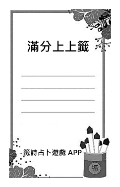
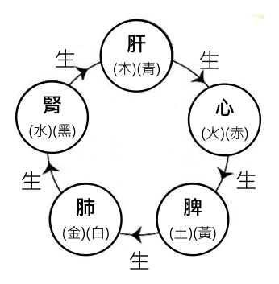

開卷有益 ／
學科能力測驗 ／ 國綜 ／ 114 年114 年學科能力測驗國綜試題與答案
這一頁是民國 114 年學科能力測驗國綜的整份歷屆試題，共 36 題，題目與標準答案出自大考中心 學測歷年試題（依著作權法 §9，考試試題不受著作權保護），其中 36 題附有詳解。以下逐題列出題幹、選項與答案；要計時作答或記錄成績，請用線上練習。
線上作答這一科 →
全部 36 題
第 1 題
下列「」內的字，讀音前後相同的是：
（A） 「舁」出寶貨／吾生須「臾」（B） 切而「啗」之／「諂」詞令色（C） 「迤」邐而行／外「弛」內張（D） 若分「畛」域／暴「殄」天物答案：（A）
詳解與考點 正解：題幹要求前後讀音相同。A：「舁」讀 ㄩˊ，意為抬舉；「臾」讀 ㄩˊ，如須臾，二字同音，故選 A。
B：「啗」讀 ㄉㄢˋ；「諂」讀 ㄔㄢˇ，讀音不同。
C：「迤」邐的「迤」讀 ㄧˇ；「弛」讀 ㄔˊ，讀音不同。它看起來對，是因為字形都有「也」的構件，不能以形判音。
D：「畛」讀 ㄓㄣˇ；「殄」讀 ㄊㄧㄢˇ，讀音不同。
本題考點：字音辨析——逐字依詞語讀音核對，不以字形相近推論同音；舁、臾同讀 ㄩˊ，迤、弛則分讀 ㄧˇ、ㄔˊ。
第 2 題
下列文句，完全沒有錯別字的是：
（A） 辯論比賽上，辯士伶牙利齒能言善道（B） 老張刻意賣弄學問，反顯得矯柔造作（C） 科學交流會後，李同學覺得大有展獲（D） 他剽竊別人智慧，還恬不知恥地炫耀答案：（D）
詳解與考點 正解：題幹要求「完全沒有錯別字」，須逐一核對成語與詞語的本字。D 的「剽竊」「恬不知恥」「炫耀」字形均正確，故 D 為正解。
A：「伶牙利齒」應作「伶牙俐齒」——俐有靈巧之義，形容口才伶俐；「利」是形近致誤。
B：「矯柔造作」應作「矯揉造作」——揉有扭曲、使彎曲之義；「柔」雖與字音相近，字義不合。它看起來對，是因為「矯柔」在語意上似乎能連成一組，但成語本字必須是「矯揉」。
C：「大有展獲」應作「大有斬獲」——斬獲指獲取、收穫；「展」與語義不合。
本題考點：錯別字辨析——成語宜回到固定本字與字義驗證，俐＝靈巧、揉＝使彎曲、斬獲＝獲取；形近或音近字即使讀來通順，本義不合仍是別字。
第 3 題
依據下文，□□內最適合填入的詞語依序是：月亮從大大小小的雲朵裡照下來，就像是從厚薄不勻的 □ □ □中滲出來的，滴到柏油路上，濃一塊，淡一塊，成了深深淺淺的□□。□□的城市。街上的人都那麼匆匆地趕路，各找各的營養。（聶華苓〈月光•枯井•三腳貓〉）
（A） 破海綿／皎潔／貪婪（B） 破海綿／青蒼／貧血（C） 舊報紙／青蒼／貪婪（D） 舊報紙／皎潔／貧血答案：（B）
詳解與考點 正解：題幹三空要使比喻、色調與城市意象連成一體。B：月光從厚薄不勻的「破海綿」中「滲」出，質感貼切；映在柏油路上的深淺色塊呈「青蒼」冷色調；「貧血的城市」又與行人「各找各的營養」呼應，以人體缺血比喻都市冷漠，故 B 為正解。
A：「皎潔」常形容明亮月光，卻不合後文濃淡不一、青冷斑駁的色調；「貪婪的城市」也不能呼應「營養」的缺乏意象。
C：「舊報紙」不如「破海綿」能承接「厚薄不勻」與「滲出」；末空「貪婪」亦破壞缺血比喻。
D：「舊報紙」無法自然呈現月光滲出，且「皎潔」與「深深淺淺」的斑駁層次不合。它看起來對，是因為皎潔是常見的月光搭配，卻忽略整段的冷暗與不均勻質感。
本題考點：現代文語境填詞——比喻須同時吻合動作與質感，色彩詞須吻合畫面，後段詞語還要與前後意象互相照應；以「營養」反推「貧血」，可確認全段的隱喻脈絡。
第 4 題
丘成桐是知名數學家，下文將數學與文學並談，主要用意是強調：《詩經》的「北風其涼」，假風以刺威虐；「雨雪霏霏」，因雪以愍征役─皆興發於此而義歸於彼。有深度的文學作品必須有「義」、有「比興」，數學亦如是。我們在尋求真知時，往往只能依循研究的大方向，憑著對大自然的感覺邁進，這種感覺因個人的修養而定。文學家為了描述最佳意境，不見得忠實描寫現象界。如賈島追究「僧推月下門」與「僧敲月下門」的區別，並不在乎所說的是不同的事實。數學家創造美好的理論，也不必依隨大自然的規律，只要邏輯推導沒有問題，就可以盡情發揮想像力。（改寫自丘成桐〈數學和中國文學的比較〉）
（A） 數學家若兼具文學修養，即可將寫作原理轉用於創造數學理論（B） 數學家雖可不依大自然規律，但無法如詩人般不忠實描寫現象（C） 數學家在論證有效下，可如詩人般馳騁想像，憑感覺創造理論（D） 數學家的意圖，如同「比興」言在此而意在彼，有待讀者解謎答案：（C）
詳解與考點 正解：題幹把文學與數學並談，關鍵條件是「只要邏輯推導沒有問題，就可以盡情發揮想像力」。C：數學家在論證有效下，可如詩人般憑感覺與想像力創造理論，符合文意，故 C 為正解。
A：文中說感覺受個人修養影響，沒有說兼具文學修養即可把寫作原理直接轉用為數學理論，A 錯誤。
B：文章明言數學家不必依隨大自然規律，且可發揮想像力，B 與文意相反，B 錯誤。
D：「比興」在文中用以說明文學特質，非指數學家故意言在此而意在彼、等待讀者解謎，D 錯誤。它看起來對，是因為文中提到「比興」，但不能把修辭功能移植為數學家的意圖。
本題考點：閱讀理解——以作者明示的條件與結論作為判斷依據；類比論述——辨清文學與數學的共通點是想像與求真，不可擴充成原文未說的直接轉用。
第 5 題
下文處，若要填入使文意前後連貫的文句，最適當的是：吾聞之，六國合從，而辯說之材出；劉、項並世，而籌畫戰鬥之徒起；唐太宗欲治，而謨謀諫諍之佐來。此數輩者，方此數君未出之時，蓋未嘗有也。 。天下之廣，人物之眾，而曰果無材可用者，吾不信也。（王安石〈材論〉）
（A） 人君苟欲之，斯至矣（B） 古之人，於材有以教育成就之（C） 人之有異能於其身，猶錐之在囊（D） 後之在位者，蓋未嘗求其說而試之以實也答案：（A）
詳解與考點 正解：前文列六國、劉項、唐太宗三例，皆說明統治者有需求時，辯說、籌畫、諫諍之才便出現；空格後又說天下人物眾多，不信沒有可用人才。A「人君苟欲之，斯至矣」意為君主只要真心求才，人才自然到來，最能承接前後，故 A 為正解。
B：談教育培養人才，沒有直接收束前文「君主欲求則人才出」的論旨，B 錯誤。
C：以錐在囊比喻有才者自然顯露，重點落在人才自現，非君主求才，C 錯誤。
D：批評在位者未求取人才，雖涉及求才，卻以轉折批評改變前文的正面推論，銜接不如 A，D 錯誤。它看起來對，是因為也提到「求」，但空格處需要的是由事例推出的人才出現條件。
本題考點：文言文句銜接——先找前後反覆出現的核心關係；論證結構——前例說明君主欲求與人才出現的關聯，後句以人才眾多補強，空格應填能總結該因果的句子。
深夜，斜臥床榻，隨手抽取一本小几上疊放的書漫讀助眠，已是長年習慣。書宜輕巧易掌握，內容勿過於深奧嚴肅，否則刺激興奮，反失效果。那夜，從書堆抽出體積特小的日本岩波書店口袋型書，曾閱讀過部分而未竟，書頁間夾著一張書籤，姑且從有書籤的那頁讀起來。翻閱兩三頁後，忽有一張小小的短箋滑下，上面印著淺淺好看藍紫色的鉛印字：
山笑─根據《廣辭苑》
俳句的季節語。謂眾樹一齊吐芽的春季華麗景致。相對的，「山眠」指枯槁失卻精采的山，「山粧」則是被紅葉裝扮的山，各為冬、秋季節語。見於北宋畫家、兼山水畫理論家郭熙的「四時山」。
《廣辭苑》雖未採入，但青青的夏季的山是「山滴」。
這幾行文字與我手中捧讀的書全不相關。把紙片反過來看，正中央印著岩波書店新印製的辭典《廣辭苑》書脊樣本，原來正面文字是為第五版《廣辭苑》做的廣告。廣告何以題為「山笑」，又引用郭熙「四時山」的字句呢？根據《廣辭苑》，「山笑」一詞，是俳句（日本古典短詩）的季節語，典出於北宋郭熙的《山水訓》。按捺不住好奇，索性走到書房去查究。《山水訓》的原文是這樣的：「真山水之煙嵐，四時不同。春山淡冶而如笑，夏山蒼翠而如滴，秋山明淨而如粧，冬山慘淡而如睡。」雖然日文廣告詞引述的文字，把原文的「如笑」、「如滴」、「如粧」、「如睡」改為「山笑」、「山滴」、「山粧」、「山眠」，以適合其語言習慣，且文章次序也略有變動，但郭熙的絕妙比喻，卻被生動地化為一則含帶商業性質的文字裡，不得不令人佩服！至於在四季不同山色中擇取「山笑」為題，從我正在閱讀的書印刷發行時間推斷，應是配合此書是春季版的效果，也是神來之筆。
日本的文士不僅寫作漢詩文，即使和歌、俳句也深受中國文化影響，這段廣告詞可以為證。查得這些來龍去脈，我心中釋然，雖則睡意全消，卻經驗了一次愉悅的失眠。（改寫自林文月〈山笑〉）
第 6 題
有關書中紙片訊息的解讀，敘述最適當的是：
（A） 為目前正在閱讀之書的廣告文案（B） 《廣辭苑》收錄俳句四季的季節語詞條（C） 以「山笑」為廣告主題，是依循季節的順序（D） 《廣辭苑》對季節語的解釋，和《山水訓》不完全相同答案：（D）
詳解與考點 正解：紙片正面把郭熙《山水訓》的「如笑、如滴、如粧、如睡」改寫為「山笑、山滴、山粧、山眠」，且次序略有變動；題眼是比對《廣辭苑》廣告的解釋與原文。D 說兩者不完全相同，符合文意，故 D 為正解。
A：紙片背面是岩波書店新印製辭典《廣辭苑》的書脊樣本，紙片是該辭典的廣告，不是作者當夜捧讀之書的廣告。
B：廣告文字列出「山笑」為春、「山眠」為冬、「山粧」為秋，並說《廣辭苑》未採入夏季的「山滴」；因此不是《廣辭苑》收錄四季季節語。
C：選「山笑」是為配合辭典在春季印刷發行，並非依春、夏、秋、冬的季節順序。它看起來對，是因為文中確實談到四時山色，但命題理由是春季版的宣傳效果。
本題考點：文本細節比對——將廣告詞與引用原文逐字比較，留意改寫、增刪與次序變動；敘事因果——辨明文中指出的選題原因，不能把相關背景誤當成直接理由。
第 7 題
文末作者說自己「經驗了一次愉悅的失眠」，最可能的原因是：
（A） 受到廣告的吸引而渴望讀完此書（B） 俳句優美典雅文詞讓人陶醉不已（C） 掘發郭熙的文句化用於廣告之妙（D） 能查證俳句發展脈絡而感到驕傲答案：（C）
詳解與考點 正解：題幹的「愉悅的失眠」要從作者睡意全消卻感到欣喜的原因判讀。C：作者查明廣告詞巧妙化用郭熙《山水訓》的文句，又以春季「山笑」配合版次，感受到商業廣告的文化底蘊，因而愉悅，故 C 為正解。
A：作者的欣喜來自查證後發現化用之妙，不是受廣告吸引而渴望讀完書。
B：令人讚賞的是廣告化用郭熙文句的巧思，不是俳句優美典雅的文詞本身。
D：作者查證後感到的是「釋然」，不是因掌握俳句發展脈絡而驕傲。
本題考點：題組心境判讀——把情緒詞回扣其前後的事件與評價；因果判準——「愉悅」源於發現文化化用的巧思，而非僅有閱讀或查證行為。
第 8 題
某籤詩占卜遊戲 APP受到上文啟發，與文具福氣包合作，擬印製如右上圖的祝福卡片內最適合選用的詩句是：置入包中，

（A） 欲去長江水闊茫，行船把定未遭風。戶內用心再作福，看看魚水得相逢（B） 蛩吟唧唧守孤幃，千里懸懸望信歸。等得榮華公子到，秋冬括括雨霏霏（C） 綠柳蒼蒼正當時，任君此去作乾坤。花果結實無殘謝，福祿自有慶家門（D） 八十原來是太公，看看晚景遇文王。目下緊事休相問，勸君且守待運通答案：（C）
詳解與考點 正解：文章說「山笑」是眾樹吐芽的春季華麗景致，且廣告以此配合春季版；題眼是祝福卡須同時具「春景」與「吉祥」兩項。C：綠柳蒼蒼正當時點出春景，花果結實、福祿慶家門寓意圓滿吉祥，最適合置入春季福氣包，故 C 為正解。
A：寫行船渡江與等待相逢，沒有春日福氣包的季節與祝福核心。
B：蛩吟、秋冬與雨霏霏營造秋冬孤懸等待之感，非春日喜氣。
D：寫晚景與守待運通，重點是等待時機，不合春天吐芽與立即祝福的情境。
本題考點：情境化詩句選擇——先由文本擷取季節意象，再核對用途所需情感；春季福氣包要選有春景且含吉祥祝願的詩句，排除僅有行旅、孤愁或守待的作品。
甘蔗是煉糖原料。溫暖潮濕的臺灣適合甘蔗生長，元朝汪大淵《島夷志略》即有「釀蔗漿為酒」的記載。荷蘭占領臺灣後，引進製糖技術，將成品銷往日本。日本因地理環境，長期以來大量依賴外國的進口糖。日治時期，臺灣總督府積極推動糖業現代化，成立新式製糖廠。發達的糖業帶動了甜點、煉乳相關產業的發展。現今頗受歡迎的日本明治巧克力，其製造商「明治製菓」，其實創立於臺灣。
市面上常見的甘蔗，有供榨汁用的白甘蔗與可直接啃食的紅甘蔗。啃甘蔗在焦桐眼中，是複雜的口腔運動。《晉書》載名士顧愷之「每食甘蔗，恆自尾至本，人或怪之。云：『漸入佳境』。」余光中〈埔里甘蔗〉認為吃甘蔗：「無論是倒啖或者順吃／每一口都是口福／第一口就咬入了佳境／卻笑東晉的名士／嚼來還是太拘謹。」同時分享心得：「而真要啖得痛快／就務必冰得徹底／嚐到那樣的甜頭，幾乎／捨不得吐掉渣子／直到嚥最後的一口／還舔著黏黏的手指頭／像剛斷奶的孩子。」
大伙一起啃甘蔗曾是許多人共同的回憶。洪愛珠在〈蘆洲老區涼水兩味〉中，憶起幼時家族老小並肩而坐啃甘蔗，覺得「於齒間碾緊，吮汁，樂呵呵吐出一碗渣來，是一種粗爽樸素的消遣。」但現在如果突然想啃，也不易買到。因而不禁說道 :「時間這躡步之賊，是如此將一個許多人啃甘蔗的社會，置換成甘蔗難尋的社會。」
第 9 題
根據上文，關於甘蔗食用與糖業發展，敘述最適當的是：
（A） 根據文獻記錄，元代即已種植甘蔗並熬蔗漿為糖（B） 臺灣製糖工業濫觴於日治時期，生產的糖銷往日本（C） 「明治製菓」創立於臺灣，以進口糖為原料生產巧克力（D） 日本積極在殖民地推動糖業現代化，期能解決對進口糖的依賴答案：（D）
詳解與考點 正解：題幹問甘蔗食用與糖業發展的最適當敘述，須回扣文中明示的日本糖業政策與原因。D：日治時期臺灣總督府積極推動糖業現代化，而日本因地理環境長期依賴進口糖，推動殖民地糖業正是為減少此依賴，符合文意。
A：《島夷志略》記載的是「釀蔗漿為酒」，不是熬蔗漿製糖。
B：臺灣製糖技術的引進始於荷蘭時期，不是日治時期。
C：文中未說明「明治製菓」以進口糖為原料生產巧克力，屬無據推論。
本題考點：國綜題組細節辨析——選項須同時符合材料中的時間、行為與因果；遇到看似熟悉的史實，仍要核對原文動詞與時期，避免把「釀酒」誤作「製糖」。
第 10 題
關於文中引述眾人吃甘蔗的經驗，敘述不適當的是：
（A） 由顧愷之與時人對話可知，倒吃甘蔗並不是當時常見的吃法（B） 余光中與顧愷之看法不同，認為順吃或倒啖，無害甘蔗甜美（C） 余光中以剛斷奶的孩子為喻，流露的情懷與洪愛珠的躡步之賊相同（D） 洪愛珠陳述啃甘蔗時口腔中進行的連續動作，呈現焦桐所謂的複雜答案：（C）
詳解與考點 正解：題幹問「不適當」敘述，需比對引文中的情感。C 將余光中「像剛斷奶的孩子」與洪愛珠「時間這躡步之賊」說成情懷相同；前者寫啃甘蔗時貪戀甜蜜、捨不得吐渣的愉悅，後者寫時間悄悄帶走共食甘蔗社會的惆悵感傷，兩者情懷不同，故 C 為正解。
A：顧愷之「每食甘蔗，恆自尾至本」，時人對此感到奇怪，可知倒吃甘蔗不是當時常見的吃法，A 正確。
B：余光中說「無論是倒啖或者順吃／每一口都是口福」，認為順吃或倒啖皆無害甘蔗甜美，B 正確。
D：洪愛珠寫「碾緊，吮汁，樂呵呵吐出一碗渣來」，確實陳述啃甘蔗時口腔連續動作，呈現焦桐所謂的複雜，D 正確。
本題考點：比較閱讀——先分辨各引文的敘述對象與情感色彩，再核對選項是否錯置；情感判準——寫味覺享受與童稚般貪戀屬愉悅，寫時間帶走共同生活記憶則屬惆悵感傷。
論小人者，必論其心。小人庸多善事，其心未有無所為而為者。若徒論外事人品真偽，學術邪正，幾不可辨矣。論君子者，又不當徒論其心，心雖純正，而行事偶失，亦即是過。故論小人以心者，所以防閑小人之法；論君子以事者，所以造就君子之方。（魏禧《魏叔子日錄》）
第 11 題
關於「君子行事」，下列最符合上文觀點的是：
（A） 縱有疏失也不易察覺（B） 必然具有良善的動機（C） 經常招致小人的詆毀（D） 能引領世風正向發展答案：（B）
詳解與考點 正解：文中說君子「心雖純正，而行事偶失，亦即是過」，題眼在「心雖純正」；可知討論君子行事時，預設其動機良善，但行為仍須受檢驗。B 最符合上文觀點，故 B 為正解。
A：文中明說即使偶有行事失誤仍是過錯，沒有說疏失不易察覺，A 錯誤。
C：文中未論及小人的詆毀，C 錯誤。
D：文中未論及君子引領世風的作用，D 錯誤。
本題考點：文言推論——先抓轉折句的讓步前提與主張；選項篩選——不可把原文未提及的常見君子形象自行補入。
第 12 題
依據上文，「論小人者，必論其心」旨在告訴讀者：
（A） 小人也有心存善念的可能（B） 不可被小人的作為所蒙蔽（C） 小人無目標的行事易壞事（D） 必須致力讓小人改邪歸正答案：（B）
詳解與考點 正解：題幹「論小人者，必論其心」的關鍵在「其心未有無所為而為者」：小人即使外在行善，仍帶有私心，故須由動機判斷。B：不可被小人的作為所蒙蔽，正合「若徒論外事……幾不可辨」之意，故 B 為正解。
A：文中不是說小人可能心存善念，而是強調其行善並非無所為而為；A 錯誤。
C：小人的問題是行事有私利目的，不是「無目標行事易壞事」；C 錯誤。它看起來對，是因為「無所為而為」容易被誤解成「沒有目標」，其實是指不為私利而行。
D：作者說明防閑小人的方法，未主張使小人改邪歸正；D 錯誤。
本題考點：文言主旨理解——先找作者反覆對比的判準；小人外事與動機不一致時，以「是否出於私心」判斷，不能只看表面作為。
現在流行區分 E 人、I 人。不只我們透過 MBTI 認識自己或他人的性格，動漫遊戲和歷史人物也有 MBTI，例如有人說李白是 ENFP。
甲
MBTI（邁爾斯‒布里格斯性格類型）
你的關注
取向
你習慣的
資訊
你做決定
的方式
你的生活
態度
E
S
T
J
樂於加入群體活動，大方
喜歡獨處的自在，傾向
分享看法，成為眾人的
I
保留內心的想法，少與
焦點。
陌生人談話。
注重實用思維，偏好具體
的指引與實踐的細節。
在乎原則、公理、正義、
倫常，對事不對人。
N
F
擅長抽象思考，用簡要的
語言掌握概念與大方向。
重視和諧、體諒，常把人們
的情緒納入處事的考量。
目標導向，希望一切在
保持開放的選擇，隨著
掌控中，按部就班照計畫
P
現況調整，能接受意想
實現。
不到的改變。
MBTI 以四個向度勾勒人的性格，每個向度都有一組對立型態。如果只取這個框架簡單易記的優點，拿它來分析古人，是可以提高識別度。
古人也有類似的思維。例如司馬遷的父親曾說「儒家」是「博而寡要，
勞而少功，是以其事難盡從。然其序君臣父子之禮，列夫婦長幼之別，不可易也。」而「道家」則是「與時遷移，應物變化，立俗施事，無所不宜，指約而易操，事少而功多。」他把這兩家當成性格互異者，若參照 MBTI，他心目中的儒家
乙
性格是 成分較多，道家性格則 較明顯。
但若從《論語》、《孟子》找句子，有符合 S 的 ① ，也有符合 N 的 ② ；有符合 T 的 ③ ，也有符合 F 的 ④ 。可見這種框架固然可提高識別度，
丙
但也可能遮蔽原本多元的面向。
第 13 題
乙若依上文MBTI研判，兩處內依序應是：
（A） ST／NP（B） SF／NT（C） TJ／FP（D） FJ／TP答案：（A）
詳解與考點 正解：乙段須依表格把儒、道兩家的描述對應 MBTI 向度。儒家重「君臣父子之禮、夫婦長幼之別」，偏重具體秩序與細節的 S，也在乎倫常原則的 T；道家「與時遷移，應物變化」且「指約而易操」，偏抽象掌握方向的 N 與開放調整的 P。A 的 ST／NP 符合，故 A 為正解。
B：儒家不以重視和諧情緒的 F 為主，道家的「應物變化」也不是 T，錯誤。
C：儒家雖有秩序性，但題文更明確對應 S、T；道家不以 F 為主要特徵，錯誤。
D：儒家不以 F 為主，道家的開放調整對應 P 而非 T，錯誤。
本題考點：圖表資訊轉譯——先從文句擷取特徵，再對應表格定義；MBTI 向度辨析——具體細節對應 S、原則公理對應 T、抽象概念對應 N、隨現況調整對應 P。
第 14 題
依上文MBTI，丙的舉證，不適當的是：
（A） ①五畝之宅，樹之以桑，五十者可以衣帛矣；雞豚狗彘之畜，無失其時，七十者可（B） ②政者，正也。子帥以正，孰敢不正（C） ③鄉愿，德之賊也（D） ④理義之悅我心，猶芻豢之悅我口答案：（D）
詳解與考點 正解：丙段④要找符合 F「重視和諧、體諒，將人們情緒納入處事考量」的證據。D「理義之悅我心，猶芻豢之悅我口」以感官之悅比喻理義，重點是理義判斷，不是人際情感與和諧，故作為 F 的舉證不適當，D 為正解。
A：列舉桑、雞豚狗彘及農事時節，著重具體實作細節，符合 S，適當。
B：「政者，正也」以「正」概括政治的本質，再由領導者自身端正推論眾人隨之端正，著重抽象概念及整體關聯，符合 N，適當。
C：「鄉愿，德之賊也」批評鄉愿，重視道德原則，符合 T，適當。
本題考點：MBTI 文句對應——S 看具體細節，N 看抽象概念，T 看原則判斷，F 看情感與人際和諧；舉證判準——先抓引文的核心關注，再核對是否符合該向度。
對三國歷史稍有了解的人都知道赤壁之戰，然而赤壁最初在李白、杜甫詩中，不過是一個地名。「折戟沉沙鐵未銷，自將磨洗認前朝。東風不與周郎便，銅雀春深鎖二喬。」杜牧這首〈赤壁〉最早將赤壁之戰與銅雀臺連結，並賦予「赤壁」具體的形象與情感。「赤壁」自此取代銅雀臺，支配了人們對三國的想像，直至今天。
〈赤壁〉開篇看似平直，卻涵藏深刻。眼前古戟因經歷實戰而折斷，「折」字傳達出戰爭的暴力。杜牧磨洗戟，並非如兵士般用以傷敵，而是為辨認前朝。於是，戟由「武」的工具變成了「文」的載體。詩的後半藉「東風」引入虛設的情境：若周瑜未得到偶然的助力，二喬姊妹將被魏俘虜而禁錮在銅雀臺。首句的未銷之「鐵」，在末句做為囚禁二喬的鐵鎖重現。「春深」表示草木茂盛，與「折戟」所象徵的受挫欲望，形成對比。〈赤壁〉為杜牧在黃州任官時所寫，以磨洗折戟，強調了與歷史的相遇是個人性的，通過與古物直接接觸而實現。
蘇軾被貶黃州，留下前後〈赤壁賦〉、〈念奴嬌•赤壁懷古〉等影響深遠的名作，標誌了「赤壁」建構過程的第二個關鍵時刻。
〈赤壁賦〉中，蘇子吟誦的〈月出〉與扣舷所歌的「望美人兮天一方」，傳達了求而不得的情思。歌詩裡的悲愁渴望，削弱了「飲酒樂甚」的稱述。不過蘇子並未意識到這點，反歸咎於吹簫客的悲音，因而發出「何為其然也」的扣問。客在回答中引述〈短歌行〉詩句，又接連提出問題。客雖未明言曹操橫槊賦詩所賦的就是〈短歌行〉，卻在赤壁之戰與曹操此詩間，建立起含蓄的關聯。作者蘇軾通過客，為〈短歌行〉標示了一個具體的創作時空，並從此左右後人對此詩的解讀。
客對赤壁之遊提供了與蘇子截然不同的視角，先前①「凌萬頃之茫然、羽化登仙」的浪漫描寫，被他成功地一一否認。面對客的反駁，蘇子先 ② 以莊子式的相對論回應「羨長江之無窮」，再申明清風明月，他與客可以取之、用之、享受之。但它們同樣需要一個感受主體才得以存在（耳得之而為聲，目遇之而成色），而且被主體的感受塗上了主觀色彩。故山水之美不過是心境的反映。由此推論，蘇子在賦文開篇所感受到的一派空明飄逸，亦是蘇子自身的延伸。
〈赤壁賦〉中蘇子萬物終歸不變的議論，若對照〈短歌行〉「明明如月，何時可掇？憂從中來，不可斷絕」，便帶出一層新的涵義：個人生命終期於盡，不像長江明月永恆，唯一能使之永恆的是歌詩文字。文字將一世梟雄對應於某個轉瞬即逝的困局而生發的憂思，塑造為一篇經久的藝術作品，在曹操和他的水軍艦隊灰飛煙滅後，依然感動著千載之後的人們。於是，在曹操釃酒臨江而賦詩的形象中，我們看到了飲酒作歌的蘇子與創作〈赤壁賦〉的蘇軾。蘇、曹二人的受挫，並不有損其文學創造的偉大。(改寫自田曉菲《赤壁之戟》)
第 15 題
下列敘述，最符合本文對杜牧〈赤壁〉一詩意象解讀的是：
（A） 「戟」被賦予殺敵之外的作用，呈現了文武交疊的影像（B） 「鐵未銷」暗示戰事慘烈，並隱喻赤壁之戰的影響深鉅（C） 「東風」喻生命的復甦，意謂二喬在銅雀臺享受新生活（D） 「銅雀」指銅雀臺，藉空間的閉鎖以暗示政治權力轉移答案：（A）
詳解與考點 正解：題幹要依本文解讀〈赤壁〉意象，關鍵句是「戟由『武』的工具變成了『文』的載體」。A：戟兼具殺敵之外的辨認前朝、承載歷史作用，正呈現文武交疊，故 A 為正解。
B：「鐵未銷」連結的是杜牧藉古戟與歷史相遇，不是隱喻赤壁之戰影響深鉅。
C：「東風」引入的是假設周瑜未獲助力的虛設情境；二喬將被俘禁於銅雀臺，非享受新生活。
D：本文未將銅雀臺的空間閉鎖解為政治權力轉移。
本題考點：詩歌意象解讀——先以文章明示的象徵功能為判準；虛設情境判讀——「若」所引內容不可當作既成事實。
第 16 題
下列敘述，最符合本文對杜牧〈赤壁〉寫作特色說明的是：
（A） 結合銅雀臺的典故，首開以赤壁之戰入詩的風氣（B） 透過特寫古兵器戟，寄託以文治取代武事的理想（C） 藉東風興發想像，隱含人未必是歷史成敗的關鍵（D） 經由磨洗動作暗示真相難明，並批判梟雄的野心答案：（C）
詳解與考點 正解：本文明說杜牧〈赤壁〉「藉東風引入虛設的情境」：若周瑜未得到偶然助力，二喬將被俘禁於銅雀臺；這顯示偶然因素能改變歷史結果，人未必是歷史成敗的唯一關鍵。C：藉東風興發想像，隱含人未必是歷史成敗的關鍵，最符合本文說明，故 C 為正解。
A：本文說杜牧最早將赤壁之戰與銅雀臺連結，並非首開以赤壁之戰入詩的風氣，A 錯誤。
B：古戟由「武」的工具變成「文」的載體，是因磨洗以辨認前朝，文中沒有寄託以文治取代武事的理想，B 錯誤。
D：磨洗的目的在辨認前朝，並非暗示真相難明；詩中也無批判梟雄野心之意，D 錯誤。
本題考點：文章細節判讀——將選項逐一回扣原文的因果與限定語，不以相近典故替代作者明言；虛設情境——若以「若……」推演偶然條件改變結果，即在凸顯成敗不只由人物意志決定。
第 17 題
依據上文，客在〈赤壁賦〉中扮演的角色，說明最適當的是：
（A） 帶出曹操詩句，建構一世梟雄形象（B） 照見蘇子欲求，提出質疑引發反思（C） 對照古今，揭示鐘鼎山林的人生領悟（D） 開展想像，呈顯空明飄逸的主體心境答案：（B）
詳解與考點 正解：題幹問「客」在〈赤壁賦〉的角色，應由客的發言功能判斷，而非只看其提到的素材。B：客照見蘇子求而不得的悲愁，一一否認其浪漫描寫並接連提出問題，因而引發蘇子的反思，最符合其角色，故 B 為正解。
A：客帶出曹操詩句只是論述手段，主要功能仍是以質疑照見蘇子欲求，A 錯誤。
C：鐘鼎山林的人生領悟是後續蘇子回應所展現的體悟，非客的主要功能，C 錯誤。
D：空明飄逸是蘇子泛舟時的主體心境，不是客所開展的角色功能，D 錯誤。
本題考點：文學角色功能——題目問角色時，要看人物的發言如何推動心理與思想轉折；客在〈赤壁賦〉以質疑揭出悲愁，促使蘇子展開反思與回應。
第 18 題
上文畫線處如欲引述〈赤壁賦〉原文為論據，是否適當的研判是： ①挾飛仙以遨遊，抱明月而長終。知不可乎驟得。 ②且夫天地之間，物各有主，苟非吾之所有，雖一毫而莫取。
（A） ①、②皆適當（B） ①適當，②不適當（C） ①不適當，②無法判斷（D） ①無法判斷，②不適當答案：（B）
詳解與考點 正解：題幹要求檢驗引文能否作為畫線處論點的論據。①「挾飛仙以遨遊，抱明月而長終。知不可乎驟得」直接呈現追求而不可得，適合支撐①；②「苟非吾之所有，雖一毫而莫取」談的是不取非己之物，不能支撐②所說蘇子以相對論回應「羨長江之無窮」，故 B 為正解。
A：②的引文與「萬物終歸不變」及對長江無窮的回應角度不合，因此「①、②皆適當」錯誤。
C：①確能表現「求而不得」，不是不適當；②也可依文意判定不適當，錯誤。
D：①並非無法判斷，因「知不可乎驟得」已明示所求不可立刻得到，錯誤。
本題考點：引文論據判讀——先抓畫線論點，再核對引文的核心語意是否直接支持；〈赤壁賦〉語意——「知不可乎驟得」表求而不得，「苟非吾之所有」表不取非己之物，兩者不可混用。
第 19 題
關於杜牧與蘇軾的赤壁書寫，最符合上文觀點的是：
（A） 皆在歌詠前代詩人的同時，重疊自身影像以寄託心志（B） 皆對歷史事件賦予個人想像，而將赤壁轉變為文學意象（C） 均拼貼片斷訊息以進行歷史想像，重現赤壁之戰發生場景（D） 均透過人與自然的對比，凸顯文學書寫對生命有限的突破答案：（B）
詳解與考點 正解：題幹問杜牧與蘇軾赤壁書寫的共同觀點，題眼是兩人都將歷史材料加入個人的感受與想像。B：杜牧藉折戟與虛設情境賦予赤壁具體形象與情感；蘇軾也藉赤壁之遊、曹操詩作與自身心境建構意義，皆把赤壁轉化為文學意象，故 B 為正解。
A：杜牧並非歌詠前代詩人，文中也未說兩人皆藉前代詩人重疊自身影像，錯誤。
C：兩人皆非拼貼片段訊息以重現赤壁之戰的實況；文章強調的是文學想像與意象建構，錯誤。
D：文中杜牧的「春深」與「折戟」形成對比，但這不是兩人共同透過人與自然對比、突破生命有限的書寫方式；生命有限與文字永恆主要是蘇軾部分的推論，錯誤。
本題考點：文意統整——比較人物書寫時，先找各段共同的處理方式，再排除只屬一人的細節；歷史題材經個人想像與情感轉化，可形成文學意象。
廳壁不宜太素，亦忌太華。名人尺幅，自不可少，但須濃淡得宜，錯綜有致。予謂裱軸不如實貼；軸慮風起動搖，損傷名跡，實貼則無是患，且覺大小咸宜也。實貼又不如實畫，「何年顧虎頭，滿壁畫滄洲」自是高人韻事。
予齋頭偶仿此制，而又變幻其形，良朋至止，無不耳目一新，
顧虎頭:東晉畫家顧愷之。
滄洲:古稱隱士居住的地方。
低回留之不能去者。
因予性嗜禽鳥，而又最惡樊籠，二事難全，終年搜索枯腸，一悟遂成良法。乃於廳旁四壁，倩四名手，盡寫著色花樹，而繞以雲煙，即以所愛禽鳥，蓄於虯枝老幹之上。畫止空跡，鳥有實形，如何可蓄？曰：不難，蓄之須自鸚鵡始。從來蓄鸚鵡者必用銅架，即以銅架去其三面，止存立腳之一條，並飲水啄粟之二管。先於所畫松枝之上，穴一小小壁孔，後以架鸚鵡者插入其中，務使極固，庶往來跳躍，不致動搖。松為著色之松，鳥亦有色之鳥，互相映發，有如一筆寫成。
良朋至止，仰觀壁畫，忽見枝頭鳥動，葉底翎張，無不色變神飛，詫為仙筆；乃驚疑未定，又復載飛載鳴，似欲翱翔而下矣。諦觀熟視，方知個裡情形，有不抵掌叫絕，而稱巧奪天工者乎？（節錄自李漁《閒情偶寄•廳壁》）
第 20 題
關於上文對廳堂壁面的設計，敘述最適當的是：
（A） 風格極簡或華麗皆可接受，但不能缺少名人書畫作品（B） 書畫貼於壁面以免風吹損傷，且可依喜好來裁切尺寸（C） 將滄洲直接繪於廳堂壁面，藉此懷念當年相識的舊友（D） 邀請名家實畫景物於壁面，並融入個人喜好選擇題材答案：（D）
詳解與考點 正解：作者先說廳壁不宜太素、亦忌太華，後仿顧愷之的「實畫」之制，請四名畫家在壁面畫著色花樹，並依個人嗜好融入禽鳥。D 完整概括此設計，故 D 為正解。
A：原文說「不宜太素，亦忌太華」，不是極簡或華麗皆可；名人尺幅也只是「不可少」，錯誤。
B：實貼確可避免畫軸受風吹損，但「大小咸宜」不是可依喜好裁切尺寸，錯誤。
C：「畫滄洲」是引顧愷之的高人韻事，並非在廳壁畫滄洲以懷念舊友，錯誤。
本題考點：文言文內容概括——按作者的設計原則、實作方式與目的逐項核對；詞義判讀——「實畫」指直接在壁面作畫，「大小咸宜」指配置合宜，不是裁切書畫。
第 21 題
根據上文朋友抵掌稱「巧奪天工」的原因，最可能是：
（A） 觀賞繞以雲煙的花樹與鸚鵡，對畫壁的開創之舉驚為仙筆（B） 肯定主人的創意，既將花樹繪於壁面，又打造鸚鵡的樂園（C） 驚嘆虛實相映的樹林與鸚鵡，理解裝置方法後方恍然大悟（D） 發現裝置能操控鸚鵡，使其動靜自如，顯現主人深知鳥性答案：（C）
詳解與考點 正解：朋友先見壁畫中的枝頭鳥動、葉底翎張，以為是仙筆所繪；直到「諦觀熟視，方知個裡情形」，才理解畫出的樹林與真鸚鵡虛實相映的裝置，因而抵掌叫絕、稱為「巧奪天工」。C 完整對應這一過程，故 C 為正解。
A：朋友稱奇不只因看見花樹、雲煙與鸚鵡，而在於辨出鳥是真實的、畫與鳥相映的巧思。
B：文中雖寫主人愛鳥，卻沒有把裝置說成打造鸚鵡樂園；朋友驚嘆的重點也不是此事。
D：銅架的作用是固定鸚鵡於壁畫松枝，並非操控鸚鵡的動靜。它看起來對，是因為文中確有裝置與鳥飛鳴，但鳥的活動是真鳥自然跳躍、飛鳴，不是機械控制。
本題考點：文言文情節推論——依人物感受變化還原稱讚的原因，先由「驚疑」再到「方知」找出關鍵發現；虛實相映——畫中松枝與真實鸚鵡互相映發，形成如同一筆寫成的巧思。
甲
《小兒藥證直訣》匯集北宋兒科大家錢乙的醫療觀點與方法，是世界現存最早的兒科專著。錢乙注重五臟、五行間的生剋關係，並提出相應的治法和方劑，而小兒臟腑柔弱，故主張用藥應避免強攻。
書中保存了二十多個醫療案例與一百多種方劑。這些
方劑或以五臟與五色的對應關係命名，如導赤散、益黃散、
瀉白散、瀉青丸；或以方中主要藥材阿膠命名，如阿膠散。
阿膠散是錢乙研創新方的代表，注重補肺止咳的主要
療效，又用甘草、糯米護脾胃以培土生金。至於化裁古方，
如香連丸，主治熱痢。古制用黃連苦降以清熱，木香芳烈以
行滯。錢乙則加入豆蔻溫澀止瀉，命名豆蔻香連丸。雖同樣
治療腹痛腹瀉，但寒熱通澀之性有別。
肝
(木)(青)
生
腎
(水)(黑)
生
生
心
(火)(赤)
生
肺
(金)(白)
脾
(土)(黃)
生
乙
東都張氏孫，九歲，病肺熱。……其證：嗽喘，悶亂，飲水不止，全不能食。錢氏用使君子丸、 。張曰：「本有熱，何以又行溫藥？他醫用涼藥攻之，一月尚無效。」錢曰：「涼藥久則寒不能食。小兒虛不能食，當補脾，候飲食如故，即瀉肺經，病必愈矣。」服補脾藥二日，其子欲飲食。錢以 瀉其肺，遂愈。張曰：「何以不虛？」錢曰：「先實其脾，然後瀉其肺，故不虛也。」（《小兒藥證直訣》）
第 22 題
甲文敘及「豆蔻香連丸」，主要是為了強調錢乙：

（A） 不拘限於傳統，合宜調整用藥（B） 善於改變藥性，易溫澀為寒涼（C） 致力考察古今方劑藥材的差異（D） 積極保存古代醫典所載的名藥答案：（A）
詳解與考點 正解：題幹問甲文舉「豆蔻香連丸」的論述目的，關鍵在錢乙於古方加入溫澀豆蔻，使藥性「寒熱通澀之性有別」。A：此例說明他能化裁古方、不拘傳統而合宜調整用藥，故 A 為正解。
B：豆蔻屬溫澀，並非把溫澀改為寒涼。
C：文中重點是調整方劑，不是考察古今方劑藥材差異。
D：文中未說他以保存古代醫典名藥為目的。
本題考點：論據與主旨——由具體方劑的增減與藥性變化，歸納作者要凸顯的人物特質；選項判準——不可把材料中的背景資訊誤當論述目的。
第 23 題
依據甲文附圖，乙文
（A） 導赤散／瀉白散（B） 導赤散／瀉青丸（C） 益黃散／瀉白散（D） 益黃散／瀉青丸答案：（C）
詳解與考點 正解：乙文的關鍵條件是「先補脾再瀉肺」，依五行與方劑名稱的顏色對應判斷。C：脾屬土、色黃，補脾用益黃散；肺屬金、色白，瀉肺用瀉白散，依序為「益黃散／瀉白散」，故 C 為正解。
A：導赤散對應心、赤色，不是補脾所用的益黃散，A 錯誤。
B：導赤散對應心，瀉青丸對應肝；兩者皆不合「補脾再瀉肺」，B 錯誤。
D：益黃散可補脾，但瀉青丸對應肝而非肺，D 錯誤。
本題考點：五行臟腑與方劑判讀——脾屬土、黃，補脾用益黃散；肺屬金、白，瀉肺用瀉白散；先把題幹的臟腑動作逐一對應，避免只憑方名中的顏色猜選項。
第 24 題
綜合甲乙二文，下列①、②是否符合錢乙醫療觀點，最適當的研判是： ①五臟母子相生，治療時宜先補母，母實之後再瀉子。 ②不強攻病證，待小兒飲食恢復正常後，方對症用藥。
（A） ①、②皆符合（B） ①、②皆不符合（C） ①符合，②不符合（D） ①不符合，②符合答案：（A）
詳解與考點 正解：乙文中錢乙先用補脾藥，待小兒飲食如故後才瀉肺；依五行，脾為土、肺為金，土生金，故先補肺之母脾再瀉肺之子。①符合。錢乙又因小兒臟腑柔弱而不強攻，先恢復飲食後分步對症用藥，②也符合。故選 A。
B：①、②都可由「先實其脾，然後瀉其肺」及「候飲食如故」得到支持，不能皆不符合。
C：②正是乙文的治療流程，不能判不符合。
D：①的母子相生關係與先補脾、再瀉肺相符，不能判不符合。
本題考點：五行生剋與文本整合——先由土生金辨認脾為肺之母，再對照「先實脾、後瀉肺」的實例；小兒用藥避免強攻，應先扶正、待飲食恢復後再對症處置。
第 25 題（多選）
下列各組「」內的詞，意義前後相同的是：
（A） 刑仁講讓，示民有「常」／自後余多在外，不「常」居（B） 人煙「猶」是，而蕭條矣／同居一府，「猶」同室之兄弟至親也（C） 由此觀之，客何「負」於秦哉／師略授小技，此來為不「負」也（D） 當獎「率」三軍，北定中原／竟「率」意而鴉塗，莫自知其鳩拙云爾（E） 新沐者必彈「冠」，新浴者必振衣／巾箱妝奩「冠」鏡首飾之盛，非人間之物答案：（C）（E）
詳解與考點 正解：題幹要比對同一字在前後句的意義，題眼是「意義前後相同」。C：前句「客何負於秦」的負是辜負，後句「此來為不負」也是不辜負，字義相同，故 C 正確。E：前句「彈冠」的冠指帽子，後句「冠鏡首飾」的冠也指帽冠類首飾，字義相同，故 E 正確。
A：前句「常」指禮法常規，後句「常居」指經常，義異，A 錯誤。
B：前句「猶是」指仍然，後句「猶同室」指如同，義異，B 錯誤。
D：前句「率三軍」指率領，後句「率意」指率性、隨意，義異，D 錯誤。它看起來對，是因為兩句都可譯作「帶著」或「依著」的動作感，實際詞義與句法功能不同。
本題考點：文言實詞一詞多義——先把字放回各自句子翻成白話，再比對核心義；判準是前後皆能以同一釋義替換且語意通順，才可判為義同。
第 26 題（多選）
下列文句畫底線的詞語，運用適當的是：
（A） 邱老師腹笥甚廣，上課引經據典，學生感佩不已（B） 在民眾熱情擁戴下，他滿懷箕山之志，決定參選市長（C） 臺北的冬天又濕又冷，如果沒有電暖器，肯定席不暇暖（D） 連假時車潮湧入熱門觀光景點，遊客摩頂放踵，寸步難行（E） 企業主管應拿出吐哺握髮的態度，積極攬才，打造國際競爭力答案：（A）（E）
詳解與考點 正解：本題逐項核對成語的本義與語境。A：「腹笥甚廣」指人學識淵博；用於上課能引經據典的邱老師，語意貼切，A 正確。E：「吐哺握髮」形容禮賢下士、求才若渴；用於企業主管積極攬才，語意正確，E 正確。
B：「箕山之志」指高潔隱居之志，與決定參選市長、投入公共事務的語境相反，B 錯誤。
C：「席不暇暖」形容奔走忙碌，連坐席都來不及坐暖；不能形容冬天濕冷，C 錯誤。它看起來對，是因為句中有電暖器與「暖」字，容易望文生義。
D：「摩頂放踵」指不辭勞苦、犧牲自身以利他人；形容人潮擁擠應用「摩肩接踵」，D 錯誤。
本題考點：成語運用——先辨明成語本義，再核對使用對象與語境；望文生義判準——成語含有的字面字詞不等於實際語義，如「席不暇暖」不指天冷。
第 27 題（多選）
關於博物館的場所特性，符合下文敘述的是：博物館雖然是向大眾開放的空間，但多數人去參觀時，會認為不能穿著太沒「文化」的服裝，以符合場所的調性。博物館也會制定一套規則來約制參觀者的行動，如入館前須經歷像宗教淨化的程序─特定物品或過大的背包不能攜入、隨身背包通過安檢、驗票；入館後更須遵守與文物間的安全距離，不能跨越禁止區域，不能拍照。而展場的布置與建議參觀路線，也提供了一個有秩序的、不會引起騷亂的世界。博物館的展示讓參觀者以為身在「現場」，卻也決定了參觀者可以看什麼、看不到什麼。博物館做為知識集合場，自然成為特定領域的權威，它一方面闡釋作品，對參觀者進行教育，一方面也讓觀眾意識到自己是知識的主體。（改寫自廖世璋〈博物館的社會不平等〉、徐夢可〈博物館觀眾身分的雙重屬性〉）
（A） 各博物館所呈現的場所調性，往往受參觀者身分與觀展規則影響而有別（B） 入館前的多道程序，主要是為了減少觀展干擾，營造歷史的「現場」感（C） 博物館的文物分類與展廳安排，已預設某種引導參觀者理解世界的途徑（D） 過度講求秩序，拉遠了參觀者與文物的距離，也減低博物館的教育成效（E） 博物館參觀者的視野雖受到知識權威的限制，卻獲得掌握知識的滿足感答案：（C）（E）
詳解與考點 正解：題幹以「制定規則」、「建議參觀路線」及「決定了參觀者可以看什麼、看不到什麼」說明博物館如何形塑觀者的行動與理解。C：文物分類、展場布置與建議路線都預設了觀看與理解的途徑，符合文意。E：博物館雖以知識權威限制觀者所見，卻又使觀眾意識到自己是知識的主體，故能獲得掌握知識的滿足感，符合文意。
A：題文說場所調性由服裝要求、安檢與參觀規則形塑，未說各館會因參觀者身分不同而有別，A 錯誤。
B：入館程序被比作宗教淨化，功能在約制行動與維持秩序；「身在現場」是展示造成的效果，非程序的主要目的，B 錯誤。
D：題文肯定有秩序的展場可避免騷亂，也說博物館具有教育功能，未說講求秩序會減低教育成效，D 屬過度推論。它看起來對，是因為安全距離與禁止區域確實限制了觀者行動，但限制不等於教育成效降低。
本題考點：文本推論——先找出原文的因果與評價，選項須能由原文直接支持；過度推論判準——原文未說限制造成負面教育效果時，不可自行補成因果；博物館的知識權力——展示與動線會引導可見事物及理解途徑。
第 28 題（多選）
依據下文，關於桃花源的文字或圖繪，敘述適當的是：類似「桃花源」的故事在各地區頗為常見，情節或許各不相同，但大致環繞著一個不變的主題，即仙境與人間的互通偶然出現。凡人在無意間穿過仙境的「入口」，體驗到各種人間所無法想像的美好，但這只能是短暫而無可回復的。源起於中國的「桃花源」則有其特別之處，即具有鮮明的自然山水美景形象，而不僅以美食、遊樂等享受界定其基本內容。以陶潛〈桃花源記〉為例，「仙境」始自武陵漁人所「忽逢」之「夾岸數百步」的「桃花林」，旋即為「中無雜樹，芳草鮮美，落英繽紛」的絕美景致所吸引，從而步入「彷彿若有光」的山洞，這些元素可以說是人間與仙境短暫遇合的引子。「桃花源」傳說實是以某種「理想化」的山水形象做為其開展的基礎。這點對其傳布過程中之所以與山水繪畫產生密切的關聯，提供了思考的角度。自古以來，對於實地景觀的圖繪並非山水畫的主流，絕大多數是以經過「理想化」的完美山水形象呈現。桃花源的傳說既植基於此，正與山水畫之旨趣相符合，極便於取為主題，遂使其在文字之外，再得視覺圖像傳播之利。約唐代之後，桃花源傳說便與「桃源圖」出現了緊密的共出關係。整個「桃花源」意象之形塑，如果說很早便以文字與圖繪兩種不同形式所共同完成，並持續發展，實在一點也不為過。（改寫自石守謙〈移動的桃花源─桃花源意象的形塑與在東亞的傳布〉）
（A） 桃花源故事啟發了中國山水圖畫，重寫意而不重寫實（B） 二者皆描繪完美的山水形象，且圖繪有助文字具象化（C） 以圖繪與文字來形塑，但分別開展出同中有異的桃源意象（D） 〈桃花源記〉開頭的山水意象具理想性，引發仙境的聯想（E） 〈桃花源記〉特殊在於以偶遇為主題，但不含享樂的元素答案：（B）（D）
詳解與考點 正解：題文指出桃花源傳說與山水畫都以「理想化」的山水形象為基礎，並說圖繪使意象獲得視覺傳播；須據此判斷。B：桃花源傳說與山水畫皆呈現理想化的完美山水，圖繪又使文字意象得以具象、視覺化傳播，符合文意。D：〈桃花源記〉開頭的桃花林、芳草、落英與山洞，被文中稱為人間與仙境短暫遇合的「引子」，具理想化山水意象並引發仙境聯想，正確。
A：文中說桃花源意象與山水畫旨趣相合，因而便於成為題材，並未說桃花源故事啟發中國山水畫；將關係說成單向啟發，錯誤。
C：文中說文字與圖繪兩種形式共同完成並持續發展桃花源意象，未說兩者各自開展出「同中有異」的意象，錯誤。
E：桃花源的特殊處在鮮明自然山水，不是僅以偶遇為主題；文中也說它不僅以美食、遊樂等享受界定基本內容，並非完全不含享樂元素，錯誤。
本題考點：閱讀理解——以「理想化山水」「文字與圖繪共同完成」等關鍵句核對選項；因果判準——文中只說旨趣相合與便於取材，不可擅自推成單向啟發關係。
第 29 題（多選）
「願陛下託臣以討賊興復之效；不效，則治臣之罪」，「則」之前提出一種假設情況（不效），「則」之後敘述結果。下列文句，屬於相同表意方式的是：
（A） 舉一隅，不以三隅反，則不復也（B） 吾家讀書久不效，兒之成，則可待乎（C） 門人然燭來，則道士獨坐，而客杳矣（D） 然同自內府播遷而來，則同為臺人而已（E） 必秦國之所生然後可，則是夜光之璧，不飾朝廷答案：（A）（E）
詳解與考點 正解：題句「不效，則治臣之罪」是「假設情況＋則＋結果」的句式，須找出則前為假設、則後為結果的選項。A：不以三隅反是假設，則不復也是結果，句式相同，正確。E：必秦國之所生然後可是假設，則是夜光之璧不飾朝廷是其推得的結果，句式相同，正確。
B：則前的兒之成是對兒子能否成就的陳述，並非提出假設條件，錯誤。
C：則表順承，意為門人拿燭火來之後，道士獨坐而客人已不見，非假設結果，錯誤。
D：則表依據前文作出的事實推論，非假設條件導致的結果，錯誤。
本題考點：文言虛詞「則」——先判斷前句是否提出假設；若是「條件＋則＋結果」即為假設複句，若表承接或事實推論則不相同。
甲
晚明文人嗜遊山水，旅遊對他們而言，是一項綜合性的審美活動，標誌著生活的雅化。文人遊賞之後，會將所見所聞、所思所感以詩文記錄下來。由於當時刻書作坊眾多，文人雅士書寫的遊記，可整理出版，向公眾發行。撰寫遊記，便成為士人重要的文化資本，用以塑造品味，並以此區別普通遊客。
從晚明文人的論述與當時出現的大量西湖旅遊書籍可知，西湖已成為文人旅遊的重要目的地。文人在記遊詩文中，以自身的審美情趣，對西湖風景資源進行梳理、總結，發展了與大眾不同的遊觀。作品發行後，對閱讀者多會產生行為與審美的指引，從而不斷塑造並加強西湖景物的內涵。
乙
西湖最盛，為春為月。一日之盛，為朝煙，為夕嵐。……然杭人遊湖，止午、未、申三時。其實湖光染翠之工，山嵐設色之妙，皆在朝日始出，夕舂未下，始極其濃媚。月景尤不可言，花態柳情，山容水意，別是一種趣味。此樂留與山僧遊客受用，安可為俗士道哉！（袁宏道〈晚遊六橋待月記〉）
丙
西湖之妙，山光水影，明媚相涵。圖畫天開，鏡花自照，四時皆宜也。然湧金門苦於官皂，錢塘門苦僧、苦客，清波門苦鬼。勝在岳墳，最勝在孤山與斷橋。吾極不樂豪家徽賈，重樓架舫，優喧粉笑，勢利傳杯，留門趨入。所喜者野航兩棹，坐恰兩三，隨處夷猶，侶同鷗鷺。或柳堤魚酒，或僧屋飯蔬，可信可宿。不過一二金而輕移曲探，可盡兩湖之致。（王思任〈遊杭州諸勝記〉）
官皂：州縣衙役。
第 30 題（多選）
綜合上述三文，關於晚明文人的記遊，說明適當的是：
（A） 偏重經驗的總結，而不著力於食宿行程的翔實記錄（B） 既用以記錄遊蹤，亦塑造了旅遊目的地的景物內涵（C） 遊記刊刻發行後，往往引發閱讀者跟風模仿其書寫風格（D） 個人的審美情趣、生活的雅化，在乙、丙二文中分別以待月、野航展現（E） 文人與大眾遊觀方式的不同，在乙、丙二文中都以空間選擇的差異呈現答案：（A）（B）（D）
詳解與考點 正解：題眼在甲文指出晚明文人以審美情趣梳理西湖景物，遊記出版後又會指引閱讀者的行為與審美；再以乙、丙文驗證其雅化的遊觀。A：甲文著重文人對景物的審美梳理與總結，不以翔實記錄食宿行程為主，故 A 正確。B：甲文明言作品發行後不斷塑造並加強西湖景物的內涵，故 B 正確。D：乙文以待月呈現不同於俗士的雅趣，丙文以野航兩棹、與鷗鷺為侶展現生活雅化，故 D 正確。
C：甲文只說遊記對閱讀者產生行為與審美的指引，未說閱讀者跟風模仿其書寫風格，C 錯誤。它看起來對，是因為「發行」與「指引」確會影響讀者，但影響的是遊觀與審美，不是文體模仿。
E：乙文以朝日、夕嵐、月景等時間選擇區分雅俗，丙文才以避開官皂、僧客與豪家徽賈等空間及場所選擇呈現差異，不能說兩文都以空間選擇呈現，E 錯誤。
本題考點：綜合閱讀——先以甲文建立作者對晚明文人記遊的總論，再回到乙、丙文核對具體例證；選項判準——原文只說行為與審美受指引，不能擴大為模仿書寫風格，且須辨明時間選擇與空間選擇的不同。
第 31 題（多選）
乙、丙文發行後，杭州旅店若提供「跟著袁進士、王進士遊西湖」自助行程建議，符合乙、丙文的介紹文字是：
（A） 首選賞遊方案：畫舫周遊，盡覽湖光山色（B） 彈性食宿規劃：依航線或個人喜好，安排餐飲住宿（C） 專屬加碼行程：山僧相伴同遊，觀鷗鷺高飛，陶然忘機（D） 誠心推薦：六橋待月、岳墳尋幽訪古（E） 貼心提醒：喜好清靜者，切忌午後遊錢塘門答案：（B）（D）（E）
詳解與考點 正解：題幹要把乙、丙文轉為旅店行程建議，須逐項核對景點、食宿與避忌。B：丙文提到「柳堤魚酒、僧屋飯蔬，可信可宿」，可依航線或個人喜好安排餐飲住宿，B 正確。D：乙文推薦六橋待月，丙文推薦岳墳、孤山，故「六橋待月、岳墳尋幽訪古」符合兩文，D 正確。E：丙文說錢塘門「苦僧、苦客」，人群嘈雜；喜好清靜者避開午後遊錢塘門，E 正確。
A：丙文反對「重樓架舫」的豪華遊覽，畫舫周遊正與其態度相反，A 錯誤。
C：乙文的「此樂留與山僧遊客」是說此景致適合山僧與遊客欣賞，不是山僧陪同遊覽；丙文也無此安排，C 錯誤。
本題考點：閱讀應用——把原文的景點、評價與限制轉換成具體行程文字；文意核對——景點名稱相符仍不足，還須符合作者對遊覽方式與人潮的態度。
張氏以髮長委地，立梳床前。靖方刷馬，忽有一人，中形，赤髯而虯，乘蹇驢而來，投革囊於爐前，取枕攲臥，看張氏梳頭。靖怒甚，未決，猶刷馬。張氏熟視其面，一手握髮，一手映身搖示靖，令勿怒。急急梳頭畢，斂衽前問其姓。臥客答曰：「姓張。」對曰：「妾亦姓張，合是妹。」遽拜之。……張氏遙呼曰：「李郎且來拜三兄！」靖驟拜之，遂環坐。曰：「煮者何肉？」曰：「羊肉，計已熟矣。」客曰：「飢甚！」靖出市胡餅。客抽腰間匕首，切肉共食。……客曰：「觀李郎之行，貧士也，何以致斯異人？」曰：「靖雖貧，亦有心者焉。他人見問，固不言，兄之問，則無隱耳。」具言其由。曰：「然則將何之？」曰：「將避地太原。」客曰：「然，吾故謂非君所能致也。」曰：「有酒乎？」靖曰：「主人西則酒肆也。」靖取酒一斗，酒既巡，客曰：「吾有少下酒物，李郎能同之乎？」靖曰：「不敢。」於是開革囊，取一人頭並心肝，卻頭囊中，以匕首切心肝共食之。曰：「此人天下負心者，銜之十年，今始獲，吾憾釋矣。」又曰：「觀李郎儀形器宇，真丈夫也。」
貼這段〈虯髯客傳〉，是打算討論明天的報告？
有默契。我們現在完全沒主題、沒框架……
那就拿「概念框架」當框架吧！
什麼？不懂！
凡是理解、思考，都需要概念框架。剛才你說「有默契」，就是明白對方有相同的理解框架；又說「不懂」，則是缺乏理解對方的框架。框架不同的人，很容易雞同鴨講。若不試著接近對方的框架，就無法消除隔閡。
這麼說，《西遊記》的唐僧剛收孫悟空為徒時，曾因為孫悟空打死強盜大吵一架，就是沒有相同理解框架。孫悟空強調那是正當防衛，唐僧則認為打劫罪不致死，不該傷人性命。
唐僧斥責孫悟空沒有慈悲好善之心，「去不得西天，做不得和尚」，也出自特定的身分框架。
哈！你們不打遊戲去看《西遊記》？不過，身分確實是人際關係的常見框架。「你是哥哥，怎不讓弟弟？」就是在設定兄長本分框架。紅拂去找李靖並說「願託喬木」，則是引導對方走進終身伴侶的框架。
孫悟空氣得丟下師父，本想回花果山，但東海龍王提醒他：若不保護唐僧，「到底是個妖仙，休想得成正果」。孫悟空想了想，選擇回唐僧身邊。
當初他大鬧天宮，得到「弼馬溫」一職，又棄官自封「齊天大聖」，應該也是在找合適的身分框架。
人們常說要跳脫框架，活出自我。但孫悟空若不走進「西天取經」的框架，就成不了「鬥戰聖佛」。人們即使能擺脫一個框架，也無法擺脫所有框架。甚至可以說，若沒活在某個框架裡，可能也不知道什麼是自我肯定的方式。
第 32 題待校
下列①、②「→」後，是就前人名言所提出的看法。關於這兩項看法是否符合上文觀點，最適當的研判是：（占2分，單選題） ①「你可以從外表的美評論一朵花或一隻蝴蝶，但不能以此評論一個人。」→ 人其實不適合以任何框架「評論」，有框架反而會壓抑才能的發揮。 ②「這世界不是缺少美，而是缺少發現美的眼睛。」→發現與否，其實無關眼睛構造，而是得先具備「看見」某個事物的概念框架，才能發現它的美。
（A） ①、②皆符合（B） ①、②皆不符合（C） ①符合，②不符合（D） ①不符合，②符合答案：（D）
詳解與考點 正解：本題（占2分）就兩則名言的引申看法，研判是否符合上文「凡是理解、思考，都需要概念框架」的觀點。①主張「人不適合以任何框架評論，有框架反而壓抑才能」，與上文相反——上文強調人必然活在某種框架中、沒有框架反而無從自我肯定，故①不符合；②主張「須先具備『看見』某事物的概念框架，才能發現它的美」，正與上文相合，故②符合。故選D（①不符合，②符合）。
A：本項判①、②皆符合，但①與上文立場相反，錯誤。
B：本項判①、②皆不符合，然②與上文「理解、思考皆需框架」相符、應為符合，錯誤。
C：本項判①符合、②不符合，恰與正解相反，錯誤。
本題考點：以文章核心觀點檢核外部引文的引申——先掌握上文「框架不可或缺」的立場，再判斷各引申是順承還是牴觸；陷阱在①以「跳脫框架」的常見說法誘人誤選符合。
第 33 題待校
下列文句，意在表達「有其他概念框架可以選擇」的是：（占2分，單選題）
（A） 河內凶，則移其民於河東，移其粟於河內。河東凶，亦然（B） 竊慕管夫人之墨竹，紙上生風；敢藉陶彭澤之黃花，圖中寫影（C） 彼節者有間，而刀刃者無厚，以無厚入有間，恢恢乎其於遊刃必有餘地矣（D） 若亡鄭而有益於君，敢以煩執事。越國以鄙遠，君知其難也，焉用亡鄭以陪鄰答案：（D）
詳解與考點 正解：本題（占2分）找出意在表達「有其他概念框架可以選擇」的文句。D選自〈燭之武退秦師〉，燭之武向秦穆公指出滅鄭對秦無益、反使鄰國（晉）得利，等於提供「可以選擇不滅鄭」的另一思考框架，最切合題旨，故選D。
A：〈寡人之於國也〉「河內凶則移民移粟」是平行調配救荒的作法，並非提出另一框架供選擇，錯誤。
B：此句效法管夫人墨竹、陶潛黃花，屬藝術取法與自謙，與「另一概念框架」無涉，錯誤。
C：庖丁解牛「以無厚入有間」講的是順應肌理的技法之熟，並非提供他人另一種選擇框架，錯誤。
本題考點：以文意主旨反向配對文句——鎖定「提供替代框架、促成重新選擇」的關鍵語意；陷阱在（C）易被誤解為「跳脫既有思路」而錯選。
第 34 題待校
上文中，虯髯客、孫悟空的某些行為，曾讓李靖、唐僧動怒，請回答下列問題：（1）李靖基於什麼身分框架，對虯髯客「取枕攲臥，看張氏梳頭」動怒？虯髯客這項舉動為何讓李靖如此介意？（占4分，作答字數：30字以內。）（2）唐僧對孫悟空打死強盜如此介意，是因為此舉損害了他所認定的什麼身分框架與特質？（占2分，作答字數：15字以內。）
標準答案未收錄
詳解與考點 【AI 整理需查證】考點：文本細讀，身分框架分析。(1) 李靖基於「伴侶/丈夫」的身分框架——他與張氏（紅拂）同宿，虯髯客攲臥直視張氏梳頭，是對其伴侶私密空間的冒犯，有失禮節且具威脅意味，故動怒。(2) 唐僧認定孫悟空打死強盜損害了「出家人/菩薩心腸」的慈悲好善身分框架——和尚以不殺生、普度眾生為本，殺人有違其對出家人應有特質的認定。
第 35 題待校
上文中，紅拂、東海龍王均曾以身分框架來引導虯髯客、孫悟空，請回答下列問題：（1）紅拂對於虯髯客攲臥相視，採取什麼身分框架來界定彼此？她「遽拜之」的舉動，是什麼用意？（占4分，作答字數：30字以內。）（2）東海龍王的提醒，讓孫悟空在「仙」的身分框架下，有何取與捨的領悟？（占4分，作答字數：30字以內。）
標準答案未收錄
詳解與考點 【AI 整理需查證】考點：文本細讀，身分框架引導。(1) 紅拂以「兄妹」框架界定彼此：對虯髯客自稱「妹」、遽拜之，用意是藉兄妹倫常框架化解李靖的怒意（消除誤會），同時也測試並接納虯髯客的豪傑身分。(2) 東海龍王提醒孫悟空在「仙」身分框架下：若只當「妖仙」則無法成正果；要選擇做「護法的仙（鬥戰聖佛）」才能修成正果，即捨「為己之仙」、取「護法取經之仙」。常見陷阱：忽略「遽拜之」化解衝突的外交用意。
第 36 題
上文中，虯髯客一度看不起李靖，後來才改變看法，請回答下列問題：（1）虯髯客問李靖「何以致斯異人」，透露了他推測李靖也許不是等閒之輩，他如此推測的前提是什麼？（占2分，作答字數：15字以內。）（2）虯髯客進一步觀察李靖的「儀形器宇」，認為他的哪些表現符合「真丈夫」框架？請舉出一項，參考下表中示例，填寫①、②。（占4分，作答字數：①10字以內； ②20字以內。）李靖的表現這項表現，符合「真丈夫」的什麼特質自言貧而有心雖然尚未顯達，卻胸懷大志。 ① ② 示例作答
下表（q36李靖表現對照表） 李靖的表現 這項表現，符合「真丈夫」的什麼特質 示例：自言貧而有心 雖然尚未顯達，卻胸懷大志。 作答：① ②
標準答案未收錄
詳解與考點 【AI 整理需查證】考點：文本推論，「真丈夫」框架。(1) 虯髯客問「何以致斯異人」，前提是他認為紅拂這樣的奇女子不會隨意跟人，故推測李靖必有過人之處（非等閒之輩方能吸引非凡女子相隨）。(2) 示例之外可舉「靖雖貧，兄之問則無隱耳（坦率知交，不因身分高低而隱瞞）」──符合「真丈夫」坦誠磊落、識人善任的特質；或「將避地太原（有謀略）」符合「審時度勢」的丈夫氣概。
其他年度
回到學科能力測驗國綜的年度總覽 ，
或到學科能力測驗題庫首頁 看其他科目。
題目與標準答案出自大考中心 學測歷年試題（依著作權法 §9，考試試題不受著作權保護）。依中華民國《著作權法》第 9 條第 1 項第 5 款，
依法令舉行之各類考試試題不得為著作權之標的，得自由利用。詳解為 AI 整理的學習輔助，
並非官方標準答案 ；中華民國會修訂，引用前請對照現行版本查證。